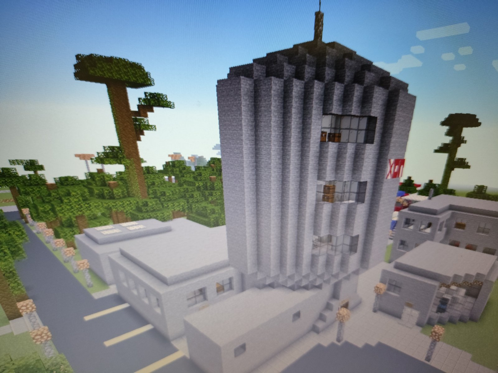

CENTRALNI BLOK JE GLAVNA I UPRAVNA ZGRADA HOTELSKE ORGANIZACIJE PETROVAC
CENTRALNI BLOK SADRZI:
- 12 CETVOROKREVETNIH SOBA
- SOPSTVENU KUHINJU I SALU ZA OBROKE
- AMBULANTU
- RECEPCIJU
- UNUTRASNJI BAZEN
- 12 CETVOROKREVETNIH SOBA
- SOPSTVENU KUHINJU I SALU ZA OBROKE
- AMBULANTU
- RECEPCIJU
- UNUTRASNJI BAZEN
U sklopu centralnig bloka je veseraj u kome odrzavamo higijenu cele Hotelske organizacije Petrovac!!!
UKUPAN KAPACITET CENTRALNOG BLOKA JE 48 GOSTIJU
 VIDI SLIKEVas direktor i vlasnik Milos Mecava